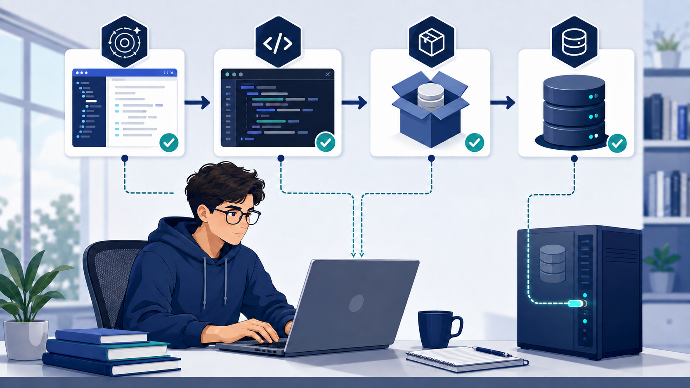

Foundation
Lesson Overview
Java Database Connectivity, commonly called JDBC, is a standard Java API used to communicate with relational database management systems. It allows a Java program to open a database connection, send SQL statements, receive results, and manage transactions through a consistent set of interfaces.
Learning Outcomes
At the end of this module, the learner should be able to:
- Explain the role of JDBC in a Java database application.
- Identify the principal JDBC interfaces and classes.
- Install and configure MySQL Connector/J in a Java project.
- Create a reusable database connection class.
- Execute parameterized SQL statements safely.
- Perform basic create, read, update, and delete operations.
- Interpret and correct common JDBC connection errors.
- Apply essential security and resource-management practices.
Key idea
JDBC is an API, while MySQL Connector/J is a database-specific driver that implements the JDBC interfaces for MySQL.
Terminology
Core JDBC Concepts
DriverManager
Locates a suitable JDBC driver and requests a database connection from it.
Connection
Represents an active session between the Java application and the database.
PreparedStatement
Executes parameterized SQL safely and helps prevent SQL injection.
ResultSet
Stores rows returned by a SELECT statement and provides methods for reading column values.
SQLException
Provides error messages, SQL state information, and vendor-specific error codes.
Transaction
Groups related operations so they succeed together or are rolled back together.
System Flow
How a JDBC Connection Works
- Load the driver. Modern JDBC drivers are discovered automatically when their JAR file is included in the project.
- Open a connection. The program supplies a JDBC URL, database username, and password.
- Prepare a statement. SQL is written with placeholders for user-supplied values.
- Execute the statement. Use
executeQuery()for retrieval orexecuteUpdate()for data changes. - Process the result. Move through returned rows and read each required column.
- Release resources. Close the result, statement, and connection automatically with try-with-resources.
Preparation
Software and Project Requirements

| Requirement | Purpose | Verification |
|---|---|---|
| Java Development Kit | Compiles and runs the Java application. | Run java -version. |
| Java IDE | Creates, organizes, runs, and debugs the project. | Create and run a basic Java class. |
| MySQL Server | Stores the application database and processes SQL. | Confirm that the MySQL service is running. |
| MySQL Connector/J | Provides the JDBC driver for MySQL. | Confirm that the connector JAR appears in project libraries. |
Before continuing
Start the MySQL service and confirm the server port. MySQL commonly uses port 3306, but your local configuration may be different.
Laboratory Guide
Step-by-Step JDBC Connection
Create the Database and Table
Open MySQL Workbench, phpMyAdmin, or the MySQL command-line client. Run the following SQL:
CREATE DATABASE school_db;
USE school_db;
CREATE TABLE students (
id INT PRIMARY KEY AUTO_INCREMENT,
student_number VARCHAR(20) NOT NULL UNIQUE,
full_name VARCHAR(100) NOT NULL,
program VARCHAR(80) NOT NULL,
created_at TIMESTAMP DEFAULT CURRENT_TIMESTAMP
);
INSERT INTO students (student_number, full_name, program)
VALUES ('2026-001', 'Maria Santos', 'BS Information Technology');USE school_db;
CREATE TABLE students (...);
Add MySQL Connector/J to the Project
Use the method appropriate for your project type.
Maven Project
Add the dependency inside the <dependencies> section of pom.xml.
<dependency>
<groupId>com.mysql</groupId>
<artifactId>mysql-connector-j</artifactId>
<version>YOUR_CURRENT_VERSION</version>
</dependency>Standard Java Project
Download Connector/J, open the project library settings, choose Add JAR/Folder, and select the connector JAR file.
Teacher prompt: Ask learners why the Java compiler can compile JDBC interfaces without Connector/J, but the application cannot connect to MySQL without the driver.
Create a Reusable Connection Class
Create DatabaseConnection.java. Replace the sample credentials with the account configured on your computer.
package database;
import java.sql.Connection;
import java.sql.DriverManager;
import java.sql.SQLException;
public final class DatabaseConnection {
private static final String URL =
"jdbc:mysql://localhost:3306/school_db"
+ "?useSSL=false&serverTimezone=UTC";
private static final String USER = "root";
private static final String PASSWORD = "";
private DatabaseConnection() {
// Prevent this utility class from being instantiated.
}
public static Connection getConnection() throws SQLException {
return DriverManager.getConnection(URL, USER, PASSWORD);
}
}Test the Connection
Create a small test class. Try-with-resources closes the connection automatically after the test.
package app;
import database.DatabaseConnection;
import java.sql.Connection;
import java.sql.SQLException;
public class ConnectionTest {
public static void main(String[] args) {
try (Connection connection = DatabaseConnection.getConnection()) {
System.out.println("Connection successful.");
System.out.println("Database: "
+ connection.getCatalog());
} catch (SQLException exception) {
System.err.println("Connection failed: "
+ exception.getMessage());
System.err.println("SQL state: "
+ exception.getSQLState());
System.err.println("Error code: "
+ exception.getErrorCode());
}
}
}Connection successful.Read the message, SQL state, and error code before changing the program.
Retrieve and Display Records
Use PreparedStatement even when a query initially has no parameters. This keeps the pattern consistent and makes later changes easier.
String sql = "SELECT id, student_number, full_name, program "
+ "FROM students ORDER BY full_name";
try (Connection connection = DatabaseConnection.getConnection();
PreparedStatement statement = connection.prepareStatement(sql);
ResultSet result = statement.executeQuery()) {
while (result.next()) {
int id = result.getInt("id");
String number = result.getString("student_number");
String name = result.getString("full_name");
String program = result.getString("program");
System.out.printf("%d | %s | %s | %s%n",
id, number, name, program);
}
} catch (SQLException exception) {
System.err.println("Unable to retrieve students: "
+ exception.getMessage());
}Data Operations
CRUD with Prepared Statements
CRUD means Create, Read, Update, and Delete. These operations form the basic data-management cycle of most information systems.
Create
INSERTAdd a new row.
Read
SELECTRetrieve stored rows.
Update
UPDATEChange an existing row.
Delete
DELETERemove a row carefully.
Safe Insert Example
String sql = "INSERT INTO students "
+ "(student_number, full_name, program) VALUES (?, ?, ?)";
try (Connection connection = DatabaseConnection.getConnection();
PreparedStatement statement = connection.prepareStatement(sql)) {
statement.setString(1, "2026-002");
statement.setString(2, "Juan Dela Cruz");
statement.setString(3, "BS Computer Science");
int affectedRows = statement.executeUpdate();
System.out.println(affectedRows + " student record added.");
}Transaction Example
Use a transaction when two or more statements must be treated as one logical operation.
connection.setAutoCommit(false);
try {
// Execute related SQL statements here.
connection.commit();
} catch (SQLException exception) {
connection.rollback();
throw exception;
} finally {
connection.setAutoCommit(true);
}Professional Practice
Security and Code Quality
Avoid
SQL String Concatenation
String sql = "SELECT * FROM users "
+ "WHERE username='" + input + "'";User input becomes part of the SQL command and may allow SQL injection.
Use
PreparedStatement
String sql = "SELECT * FROM users "
+ "WHERE username = ?";
statement.setString(1, input);The value is transmitted as data rather than executable SQL syntax.
- Do not publish credentials. Use environment variables or a protected configuration file outside the public source repository.
- Use limited database accounts. Grant only the privileges required by the application.
- Validate application input. Check length, format, required values, and business rules.
- Use try-with-resources. Release connections, statements, and results even when an error occurs.
- Log responsibly. Record useful technical details, but never log passwords or other confidential information.
- Use a connection pool in production. A pool reuses established connections and controls resource usage.
Diagnosis
Common Errors and Solutions
01 No suitable driver found
Likely cause: Connector/J is missing from the runtime classpath or the JDBC URL is invalid.
Action: Confirm the dependency or JAR file, then verify that the URL begins with jdbc:mysql://.
02 Communications link failure
Likely cause: MySQL is stopped, the port is incorrect, or the host cannot be reached.
Action: Start the MySQL service and compare the configured server port with the JDBC URL.
03 Access denied for user
Likely cause: The username, password, host permission, or database privilege is incorrect.
Action: Test the same account in a database client and review its grants.
04 Unknown database
Likely cause: The database name in the URL does not exist or has been typed incorrectly.
Action: Run SHOW DATABASES; and copy the exact intended database name.
05 Table or column not found
Likely cause: The SQL statement does not match the selected database schema.
Action: Run DESCRIBE students; and compare every identifier with the Java query.
06 Duplicate entry
Likely cause: A value already exists in a primary-key or unique column.
Action: Check the current record before inserting, then show a clear validation message to the user.
Recommended Diagnostic Order
- Read the complete exception message.
- Confirm that the database service is running.
- Verify host, port, and database name.
- Test the account credentials and privileges.
- Confirm the Connector/J dependency.
- Review the SQL statement and schema names.
Application
Guided Laboratory Activity
Performance Task
Student Record Console Application
Create a Java console application that connects to school_db and manages the students table.
Required Features
- Test and report the database connection status.
- Add a student using a parameterized
INSERT. - Display all students using
SELECTandResultSet. - Update a student's program using the student number.
- Delete a record only after a confirmation prompt.
- Handle SQL errors without terminating unexpectedly.
- Close every JDBC resource correctly.
Reflection Questions
- What is the difference between the JDBC API and a JDBC driver?
- Why should a database connection be closed as soon as it is no longer needed?
- How does
PreparedStatementimprove security? - Which connection error did you encounter, and how did you verify its cause?
Evaluation
Knowledge Check and Rubric
Short Knowledge Check
- Which JDBC interface represents an active session with a database?
- Which method is normally used to run a
SELECTstatement? - What information is contained in a JDBC URL?
- Why are question-mark placeholders used in a prepared statement?
- What should happen when one operation in a transaction fails?
Show suggested answers
Connection.executeQuery().- The protocol/driver, host, port, database name, and optional connection properties.
- They keep supplied values separate from SQL syntax and support safe parameter binding.
- The transaction should be rolled back so partial changes are not retained.
| Criterion | Excellent | Satisfactory | Needs Improvement | Weight |
|---|---|---|---|---|
| Connection and configuration | Correct, reusable, and secure. | Works with minor configuration issues. | Incomplete or unreliable. | 25% |
| CRUD implementation | All operations function correctly. | Most operations function. | Several operations are missing. | 35% |
| Safety and error handling | Prepared statements and clear handling throughout. | Mostly safe with minor omissions. | Unsafe SQL or unhandled errors. | 25% |
| Code quality and documentation | Organized, readable, and well documented. | Generally readable. | Difficult to follow. | 15% |
Module Summary
From Connection to Professional Practice
A dependable JDBC program uses the correct driver, a valid connection URL, protected credentials, prepared statements, structured error handling, and automatic resource cleanup. These practices provide the foundation for larger desktop, web, and enterprise Java applications.
Review from the Beginning Return to Home